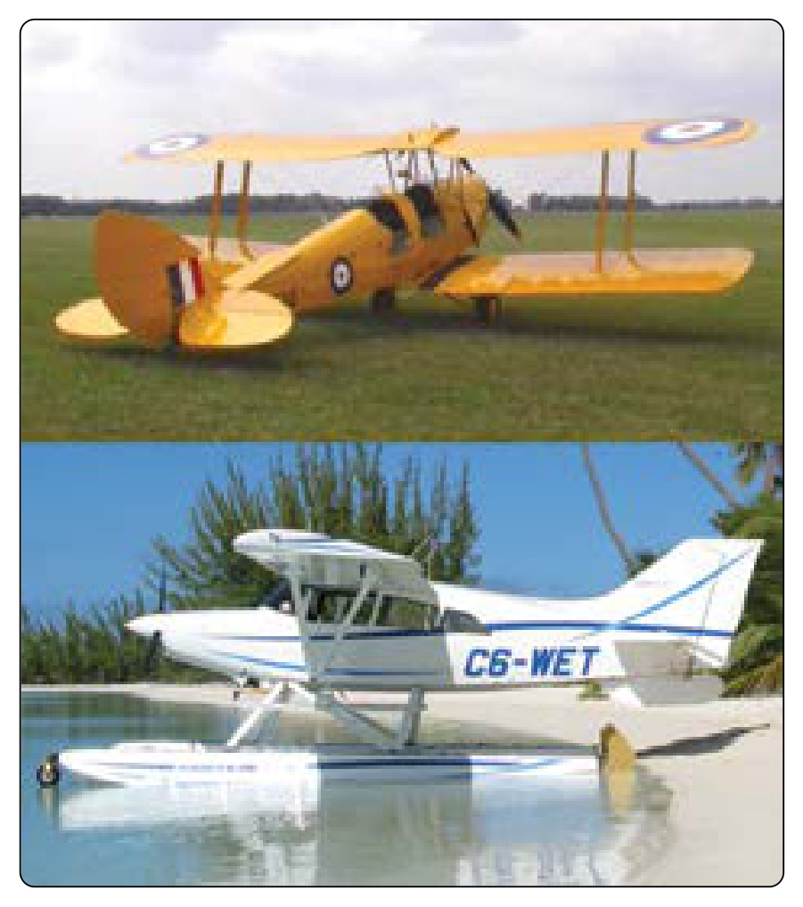
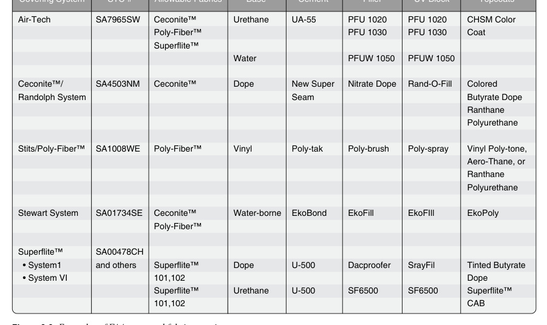
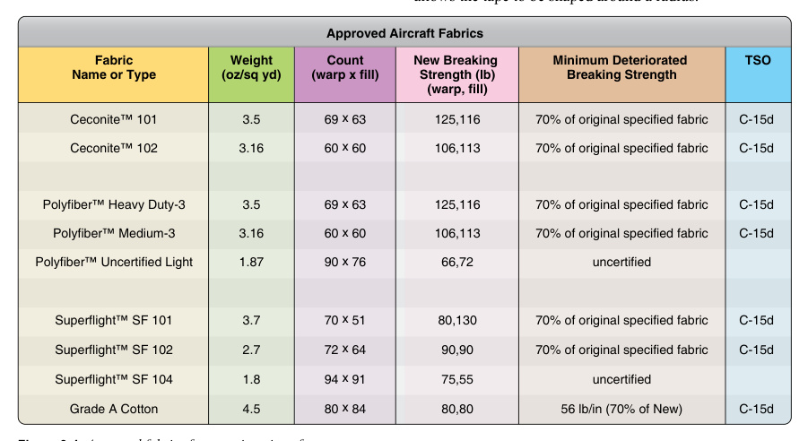
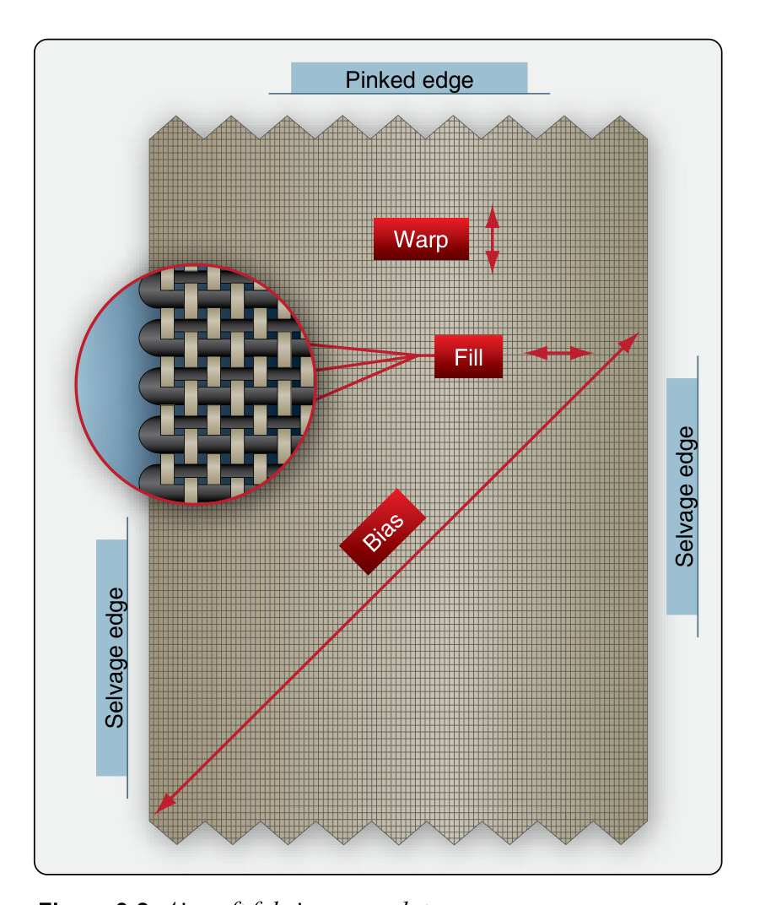
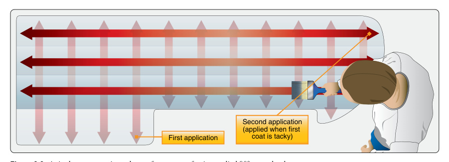
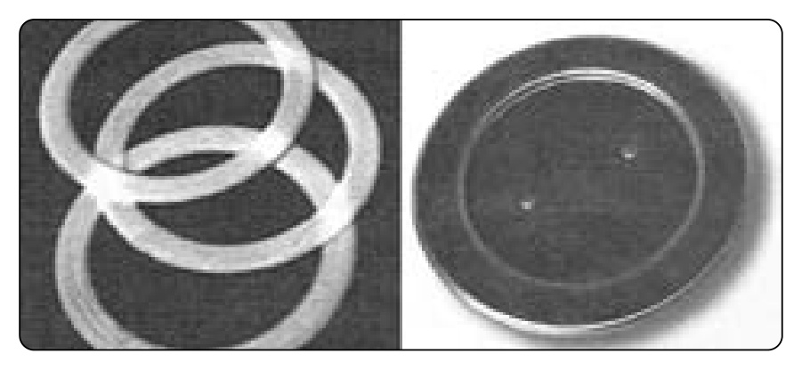

항공기 우포 외피
우포(Fabric) 외피의 재료·FAA 승인·섬유 방향·강도 기준·도포 방법·도프 마감·그로밋을 다룹니다.
Covers fabric covering materials, FAA approval, fabric orientation, strength standards, covering methods, dope finishing, and grommets.
우포(Fabric) 외피는 항공 초기의 주 구조 방식이었고, 지금도 경량기·빈티지기에 쓰입니다.Fabric covering was the primary early construction method and is still used on light and vintage aircraft.
1) 유기 섬유(Organic) — 면(Cotton)·아마(Linen). 전통 재료지만 습기·자외선·곰팡이에 약함.1) Organic fibers — cotton and linen; traditional but weak to moisture, UV, and mildew.
2) 무기(합성) 섬유(Inorganic) — 폴리에스터(Ceconite, Polyfiber, Superflite)·유리섬유. 강도·내구성이 우수해 현대 표준.2) Inorganic (synthetic) fibers — polyester (Ceconite, Polyfiber, Superflite) and fiberglass; superior strength and durability, the modern standard.
우포 외피는 시간이 많이 걸리지만 작업 자체는 어렵지 않으며, 제작사 절차와 승인된 재료만 사용하는 것이 핵심입니다.Fabric work is time-consuming but not difficult; the key is following the manufacturer's procedures and using only approved materials.


- A. 90%90%
- B. 80%80%
- C. 70%70%
- D. 50%50%
- A. 소수리(Minor Repair)Minor repair
- B. 주요 수리(Major Repair)Major repair
- C. 예방정비Preventive maintenance
- D. 경미한 개조Minor alteration
- A. 부티레이트Butyrate
- B. 질산(Nitrate)Nitrate
- C. 동일함Same
- D. 둘 다 불연성Both nonflammable
- A. 면(Cotton)Cotton
- B. 아마(Linen)Linen
- C. 폴리에스터(Polyester)Polyester
- D. 실크Silk
- A. 방충 페이스트Fungicidal paste
- B. 알루미늄 분말(Aluminum)Aluminum powder
- C. 리타더Retarder
- D. 리쥬베네이터Rejuvenator
- A. 펀칭(Punching)Punching
- B. 커팅(Cutting)Cutting
- C. 드릴링Drilling
- D. 가열Heating
- A. 리타더Retarder
- B. 리쥬베네이터(Rejuvenator)Rejuvenator
- C. 방충 페이스트Fungicidal paste
- D. 알루미늄 페이스트Aluminum paste
- A. 원래 강도의 70%70 percent of its original strength
- B. 중급 원단 신품 강도의 70%70 percent of the original strength for intermediate fabric
- C. 워프·필 56파운드/인치56 pounds per inch warp and fill
- A. 도프 코팅의 상태를 복원restore the condition of dope coatings
- B. 원단 강도·팽팽함을 최소 허용치로 복원restore fabric strength and tautness to the minimum acceptable level
- C. 원단에 침투해 방균성 복원penetrate the fabric and restore fungicidal resistance
- A. 폴디드펠 또는 플레인 랩드만Folded-fell or plain lapped
- B. 폴디드펠·프렌치펠·플레인 랩드Folded-fell, French-fell, or plain lapped
- C. 프렌치펠 또는 플레인 랩드만French-fell or plain lapped
- A. 5겹Five
- B. 3겹Three
- C. 4겹Four
- A. 커버링 원단의 '리플 형성' 방지To help prevent ripple formation in covering fabric
- B. 구조를 이루는 원단 가장자리의 마모 저항 보강To provide additional wear resistance over the edges of fabric forming structures
- C. 보강 테이프 아래 찢김 방지 보강To provide additional anti-tear resistance under reinforcement tape
- A. 도프 도포 전 재봉·레이싱Sewed or laced on before dope is applied
- B. 마감 코트 직전 도프로 부착Doped on immediately prior to the finish coat
- C. 도프 1~2차 코트 후 도프로 부착Doped on after the first or second coat of dope
- A. 최대 익면하중만maximum wing loading only
- B. 항공기 속도만speed of the aircraft only
- C. 항공기 속도와 최대 익면하중speed of the aircraft and the maximum wing loading
- A. 면과 데이크론cotton and dacron
- B. 면과 리넨cotton and linen
- C. 유리섬유와 리넨glass and linen
- A. 내화(Fireproof)여야 한다be fireproof
- B. 최소한 난연(Flame Resistant)이어야 한다be at least flame resistant
- C. Part 43 요건을 충족해야 한다meet the requirements prescribed in Part 43
우포 재장착(Re-cover)은 14 CFR Part 43상 주요 수리(Major Repair)로, FAA Form 337에 기록해야 합니다.Re-covering is a major repair under 14 CFR Part 43 and must be recorded on FAA Form 337.
승인된 데이터 출처는 세 가지입니다.There are three sources of approved data.
1) 제작사 서비스 매뉴얼(Service Manual) — 원래 재료·방법으로 재장착 시.1) Manufacturer's service manual — for re-covering with the original materials and methods.
2) 보충형식증명(STC) — 원래와 다른 합성 섬유로 개조 시. 단, 속도·날개하중 한계가 바뀌면 STC가 무효일 수 있음.2) Supplemental Type Certificate (STC) — for altering to a different synthetic fabric; an STC may be invalid if speed or wing-loading limits changed.
3) 자문회보 AC 43.13-1B — 매뉴얼·STC가 없을 때 면·아마+도프 방식의 허용 방법 제공.3) Advisory Circular AC 43.13-1B — an acceptable cotton/linen-and-dope method when no manual or STC exists.
이 중 어느 것도 없으면 FAA 현장 승인(Field Approval)을 받을 수 있습니다. 절차·재료를 섞거나 대체하면 안 됩니다.If none apply, an FAA field approval may be obtained. Never mix or substitute procedures or materials.


우포 외피에 쓰는 모든 재료는 FAA 최소 기준을 충족해야 합니다.All fabric-covering materials must meet FAA minimum standards.
1) FAA-PMA(Parts Manufacturer Approval) — FAA가 제품이 기준에 맞는다고 승인한 표시.1) FAA-PMA — a mark showing the FAA approved the product to standard.
2) 확인 방법 — 신뢰할 수 있는 항공 자재상에서 구매하고, 직물 셀비지(Selvage) 가장자리의 PMA 스탬프를 확인.2) Verification — buy from a reputable aircraft supplier and check the PMA stamp on the fabric's selvage edge.
3) 유통기한(Shelf Life) — 오래된 도프·용제는 규격을 못 맞출 수 있으니 주의. 인건비가 작업비의 대부분이므로, 오래된 재료로 결함을 만들면 오히려 비용이 커짐.3) Shelf life — old dopes and solvents may fail spec; since labor is most of the cost, using old materials that create defects raises costs.
제조사가 지정한 공정의 제품만 사용하고 대체하지 않습니다.Use only products from the specified process and do not substitute.


우포 작업은 섬유 방향(Orientation) 이해에서 시작합니다.Fabric work begins with understanding orientation.
1) 워프(Warp) — 롤에서 풀리는 길이 방향(0°). 실이 더 많아 가장 강함. 반드시 비행 방향과 평행하게 부착.1) Warp — the lengthwise direction off the bolt (0 degrees); has more threads and is strongest. Always applied parallel to the direction of flight.
2) 웨프트/필(Weft/Fill) — 워프에 수직(90°) 방향. 워프와 교차해 직물을 형성.2) Weft/fill — perpendicular (90 degrees) to the warp, interweaving to form the cloth.
3) 셀비지 에지(Selvage Edge) — 워프와 평행한 촘촘한 가장자리. 풀림 방지용이지만 강도가 달라 사용 전 제거.3) Selvage edge — the tight edge parallel to the warp; prevents unraveling but has different strength, so it is removed before use.
4) 바이어스(Bias) — 워프에 45° 대각선. 곡면 성형을 위해 늘릴 수 있음. 워프·필 방향으로는 거의 안 늘어남.4) Bias — 45 degrees diagonal to the warp; stretches for contouring but barely stretches along warp or fill.


- A. 웨프트(Weft)Weft
- B. 워프(Warp)Warp
- C. 바이어스(Bias)Bias
- D. 셀비지(Selvage)Selvage
우포는 강도가 신품 기준값의 70% 미만으로 떨어지면 감항성이 없어 교체해야 합니다.Fabric must be replaced when strength falls below 70% of the new value, losing airworthiness.
1) 그레이드 A 면(Grade-A Cotton) — 신품 최소 인장강도 80 lb/in. VNE 160mph 초과·날개하중 9psf 초과 항공기에 필수. 56 lb/in(70%)까지 감항.1) Grade-A cotton — new minimum 80 lb/in; required on aircraft over VNE 160 mph or wing loading over 9 psf; airworthy down to 56 lb/in (70%).
2) 중간등급 면(Intermediate) — 신품 65 lb/in. VNE 160mph 미만 경량기용. 46 lb/in까지 감항.2) Intermediate cotton — new 65 lb/in for light aircraft under VNE 160 mph; airworthy to 46 lb/in.
3) 글라이더 우포 — 신품 50 lb/in. 합판 표면 마감용으로도 사용.3) Glider fabric — new 50 lb/in; also used to finish plywood surfaces.
4) 아이리시 리넨(Linen) — 신품 약 140 lb/in로 면보다 강하나 무겁고 구하기 어려움. 복원(Restoration)용.4) Irish linen — new about 140 lb/in, stronger than cotton but heavier and scarce; used for restorations.
강도는 인장시험으로 확인하며, 신품 기준값과 감항 한계값을 반드시 구분합니다.Strength is checked by tensile test; always distinguish the new value from the airworthy limit.


![Seyboth and Maule fabric strength testers]()
- A. 지압 강도(Bearing)bearing strength
- B. 전단 강도(Shear)shear strength
- C. 인장 강도(Tensile)tensile strength
우포를 기체에 부착하는 두 가지 방법입니다.Two methods of attaching fabric to the airframe.
1) 블랭킷법(Blanket) — 평평한 천을 펼쳐 부착 후 봉합.1) Blanket method — flat fabric applied and then seamed.
2) 봉투법(Envelope) — 미리 재봉한 봉투를 날개·표면에 씌움.2) Envelope method — a pre-sewn envelope slipped over a wing or surface.
리브(Rib)에는 리브 레이싱(Rib Lacing)으로 우포를 고정합니다. 이는 비행 중 양력으로 우포가 리브에서 떨어지는 것을 막고, 익형 형상을 유지해 양력 교란을 방지합니다.Fabric is secured to ribs by rib lacing, which keeps lift from pulling it off the ribs and maintains the airfoil shape to prevent lift disruption.
리브 레이싱 아래에는 보강 테이프(Reinforcing Tape)를 깔아 레이싱 코드가 우포를 뚫고 나가는 것을 막습니다.Reinforcing tape under the lacing stops the cord from pulling through the fabric.
합성 섬유(폴리에스터)는 미수축(Greige) 상태로 공급되어, 설치 중 열을 가하면 원래 크기로 수축합니다.Synthetic (polyester) fabric is supplied unshrunk (greige) and constricts to size when heat is applied during installation.


![A rib lacing spacing chart]()
도프(Dope)는 우포에 밀폐막을 형성하고 강성을 주는 마감재입니다.Dope forms an airtight film and stiffens the fabric.
1) 질산셀룰로스 도프(Nitrate) — 부착력이 우수해 접착용·초벌용으로 사용. 단, 인화성이 매우 높아 환기·주의 필수.1) Nitrate dope — strong adhesion, used for bonding and base coats, but highly flammable, requiring ventilation and care.
2) 아세트산부티르산셀룰로스 도프(Butyrate/CAB) — 현재 가장 널리 쓰임. 질산 도프보다 잘 안 타고 수축력(Tautening)이 큼. 질산 위에 덧칠 가능(반대는 불가).2) Butyrate (CAB) dope — the most widely used today; less flammable than nitrate with greater tautening. It can go over nitrate (not the reverse).
3) 알루미늄 페이스트(Aluminum) — 도프에 알루미늄 분말을 섞어 자외선을 차단하고 열을 반사. 색상 코트 전에 도포.3) Aluminum paste — aluminum powder mixed into dope blocks UV and reflects heat, applied before color coats.
4) 리쥬베네이터(Rejuvenator) — 도프가 갈라지거나 부서졌을 때 용제·가소제로 되살림. 단, 우포 자체 강도는 복원하지 못함.4) Rejuvenator — solvents and plasticizers restore cracked or brittle dope, but cannot restore the fabric's own strength.
블러싱(Blushing, 습기로 인한 흐림)은 리타더(Retarder, 지연 용제)를 첨가해 방지합니다.Blushing (moisture haze) is prevented by adding a retarder (slow-drying solvent).


우포 외피의 배수·검사·방충 부품들입니다.Drainage, inspection, and anti-fungus parts of fabric covering.
1) 배수 그로밋(Drainage Grommet) — 날개·꼬리 최저점, 각 리브 베이 후방에 설치해 내부 습기를 배출. 두 번째 도프 코트 때 부착하고, 경화 후 중앙을 칼로 잘라 개방.1) Drainage grommets — placed at the lowest points of wings and tail and aft of each rib bay to drain moisture; applied with the second dope coat and cut open after curing.
2) 검사링(Inspection Ring) — 내부 구조 접근이 필요한 곳에 설치. 우포에 강도를 더하고 풀림을 방지. 완성 후 중앙을 잘라 금속 커버로 막음.2) Inspection rings — placed where interior access is needed; add strength and prevent unraveling, then cut open and closed with a metal cover.
3) 방충 페이스트(Fungicidal Paste) — 면·아마는 곰팡이에 약하므로, 초벌 도프에 섞어 포자를 죽여 부패를 방지. 대비를 위해 염료와 함께 사용.3) Fungicidal paste — mixed into the base dope to kill spores and prevent rot, since cotton and linen are prone to mildew; used with a dye for contrast.
배수 그로밋은 반드시 '펀칭'이 아니라 '커팅'으로 개방합니다.Drainage grommets are opened by cutting, never punching.



현대 폴리에스터 외피 시스템 📗 ASA 보강
Modern Polyester Fabric Systems오늘날 대부분의 우포 작업은 면(Grade-A cotton)이 아니라 폴리에스터(상표명 Dacron) 우포를 씁니다. 폴리에스터는 승인된 면포보다 강하고 훨씬 오래갑니다.Most fabric work today uses polyester fabric (trade name Dacron) rather than Grade-A cotton. Polyester is stronger than approved cotton and far more durable.
■ STC 승인 — 폴리에스터 외피는 보충형식증명(STC)에 따라 시공합니다. 설치자는 STC 매뉴얼 지시를 그대로 따르고 FAA Form 337에 STC를 승인 자료로 기재해야 하며, 서로 다른 브랜드의 재료를 섞어 쓰면 안 됩니다.■ STC approval — polyester covering is done under a Supplemental Type Certificate (STC). The installer must follow the STC manual exactly, list the STC as approved data on FAA Form 337, and must not mix materials between different brand systems.
■ 주요 시스템 — Poly-Fiber, Ceconite(7600), Superflite(System I·II). 각 시스템은 우포·접착제·도료가 하나로 승인된 완결 세트입니다.■ Main systems — Poly-Fiber, Ceconite (7600), and Superflite (System I & II). Each is a complete, approved set of fabric, cements, and coatings.
■ 부착 — 도프 대신 시스템 전용 고강도 시멘트(예: Poly-Fiber의 Poly-Tak)로 우포를 구조에 붙입니다.■ Attachment — the fabric is bonded to the structure with the system's high-strength cement (e.g., Poly-Tak in Poly-Fiber), not with dope.
■ 열수축(핵심 공정) — 면포가 도프로 팽팽해지는 것과 달리, 폴리에스터는 열로 장력을 얻습니다. 제조사 매뉴얼에 맞춰 교정된 스팀·건식 다리미(또는 적외선 온도계로 온도 확인)로, 대략 저온 1차 수축 후 최종 약 350°F로 여러 번 지나가며 완전한 팽팽함을 만듭니다.■ Heat-shrinking (the key step) — unlike cotton (tautened by dope), polyester gains tension from heat. Using a calibrated steam or dry iron (or an infrared thermometer to check temperature) per the manufacturer's manual, the fabric is first shrunk at a lower temperature and then given final passes at roughly 350°F for full tautness.
■ 도료 — Poly-Brush 필 코트가 자외선을 차단합니다(폴리에스터의 유일한 큰 적은 햇빛). 마감은 Poly-Tone, 내약품성이 더 필요하면 Aero-Thane을 씁니다.■ Coatings — a Poly-Brush fill coat blocks ultraviolet light (polyester's one major enemy is sunlight). Finish with Poly-Tone, or Aero-Thane where more chemical resistance is needed.
천 커버링의 점검 📙 Jeppesen 참고
Fabric Inspection천은 열화가 빠른 부위부터 점검합니다 — 직사광·큰 온도변화에 노출된 면, 열을 많이 흡수하는 짙은 색 부위가 먼저 상합니다. 검사링을 열고 미러·플래시로 날개 내부와 천을 살피며, 조종케이블 입구·검사링·배수 그로밋 둘레의 마모·열화를 봅니다.Inspect fabric starting where it deteriorates fastest — surfaces in direct sun or big temperature swings, and darker colors that absorb more heat. Open the inspection rings and use mirrors and a flashlight to view the wing interior and fabric, checking around control-cable inlets, inspection rings, and drain grommets for wear and deterioration.
빛이 천을 투과해 내부를 비추면 그 부위의 자외선 열화를 시험합니다. 내부의 응결·물 자국을 찾아 부패·부식 흔적을 살핍니다. 과도한 열화나 작은 찢김·터짐이 있으면 원래의 강도와 팽팽함(tautness)을 되살리는 수리가 필요합니다.If light penetrates the fabric and lights the interior, test that area for UV deterioration. Look inside for condensation or water marks and check for rot or decay. Excessive deterioration or minor rips and tears call for a repair to restore original strength and tautness.


천 수리 유형과 한계 📙 Jeppesen 참고
Fabric Repair Types & LimitsL형 찢김은 흔한 손상으로, 찢긴 끝을 먼저 태킹한 뒤 베이스볼 스티치로 꿰매고(인치당 최소 4땀, 가장자리 1/4인치 안쪽 진입, 8~10땀마다 사인 매듭으로 잠금) 핑크드 마감테이프로 덮습니다. 봉합 전후로 도프를 찢김에서 최소 2인치까지 맑은 도프층(clear coat)이 나올 때까지 제거합니다.An L-shaped tear is common: tack the ends, then sew with a baseball stitch (at least 4 stitches per inch, entering at least 1/4 in from the edge, locking every 8–10 stitches with a modified seine knot) and cover with pinked-edge finishing tape. Before and after sewing, remove dope to at least 2 in from the tear, down to the clear dope coats.
손상이 어느 방향으로도 16인치를 넘지 않고 항공기 초과금지속도(VNE)가 150 mph 이하면 도프드인(doped-in) 패치로 수리합니다. VNE가 150 mph를 넘거나 양력면 윗면 손상이면 스운인(sewed-in) 패치로 꿰맵니다. 손상이 16인치를 넘거나 연속된 두 리브를 덮으면 주요 수리(major repair)로 로그 기입과 FAA Form 337이 필요합니다. 제작사 승인자료가 없으면 AC 43.13-1B의 수용 방법을 따릅니다.If damage is no more than 16 in in any direction and the aircraft's never-exceed speed (VNE) is 150 mph or less, use a doped-in patch. If VNE exceeds 150 mph or the damage is on the top of a lifting surface, sew the patch in. Damage over 16 in, or covering two consecutive ribs, is a major repair needing a logbook entry and FAA Form 337. Without the manufacturer's approved data, follow the acceptable methods in AC 43.13-1B.


🗣 ASA 구술시험 (Oral Exam) Typical Oral Questions
📝 ACS 객관식 퀴즈 ACS Multiple-Choice Quiz
FAA 핸드북 전체 도면
FAA Handbook FiguresNo FAA Handbook figures for this chapter, or not yet uploaded.